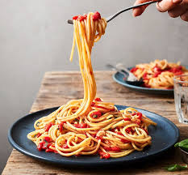

Spaghetti

Description
This will be a simple recipe for quick and delicious Spaghetti!
Ingredients
- 1 pound ground beef
- 1 box of spaghetti noodles
- 4 quarts of water
- 2 jars of your favorite pasta sauce
Steps
For the Sauce
- Heat a medium pot over medium heat.
- Once pot is heated, add 1 pound ground beef.
- Brown meat, stirring constantly until it is fully cooked through.
- Remove from heat and drain grease from the meat.
- Once the grease has been drained, mix in your jars of pastra sauce.
- Voila! Your spaghetti sauce is complete! Serve over top your cooked noodles or mix it in. it is your choice!
For the noodles
- In a large pot, bring your 4 quarts of water to a boil over high heat
- Once water is boiling, add in 1 box spaghetti pasta and return to a boil
- Once pasta has returned to a boil, continue to cook for 4-5 miuutes stirring constantly or until noodles are tender
- Once pasta is tender, remove from heat and drain water from pasta
- Once water has been drained, add your sauce and enjoy your meal!